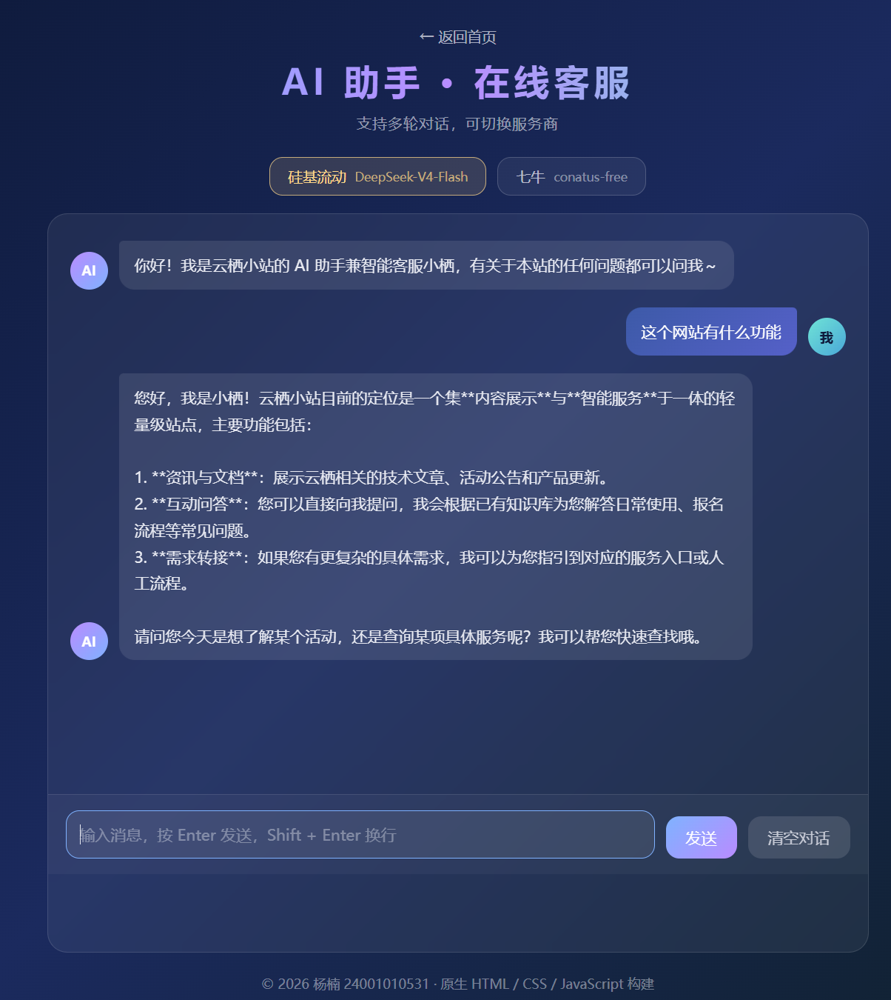
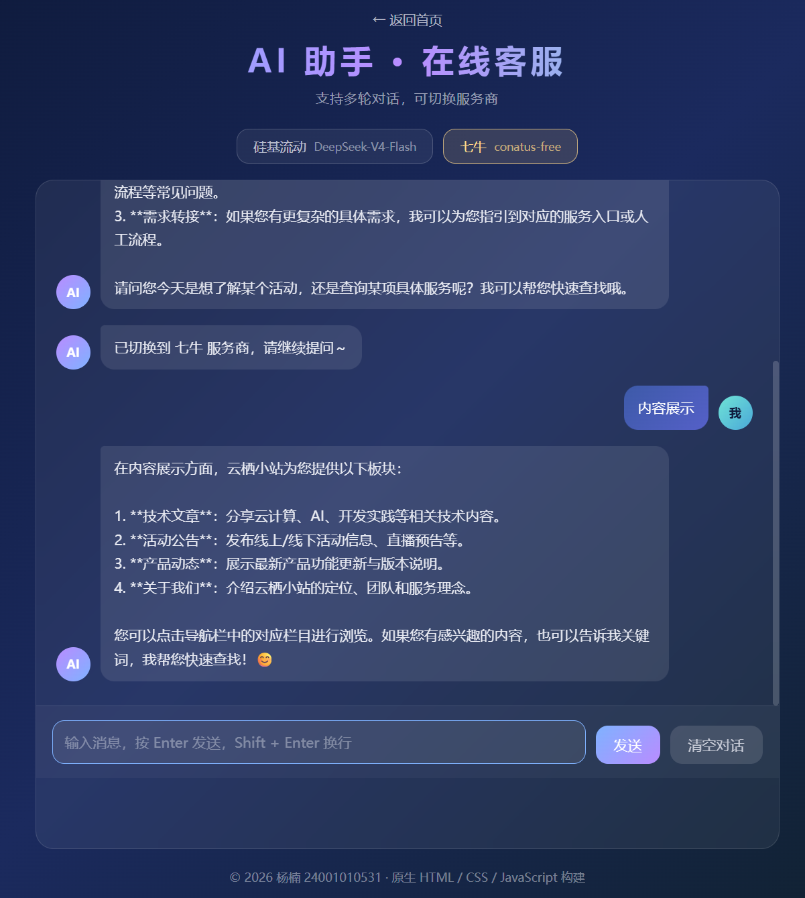
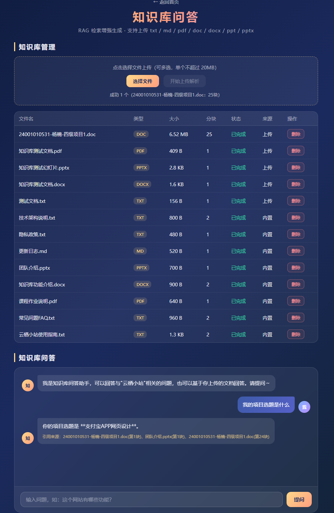
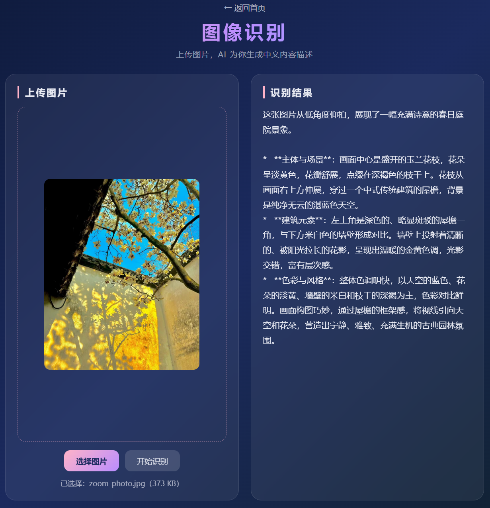
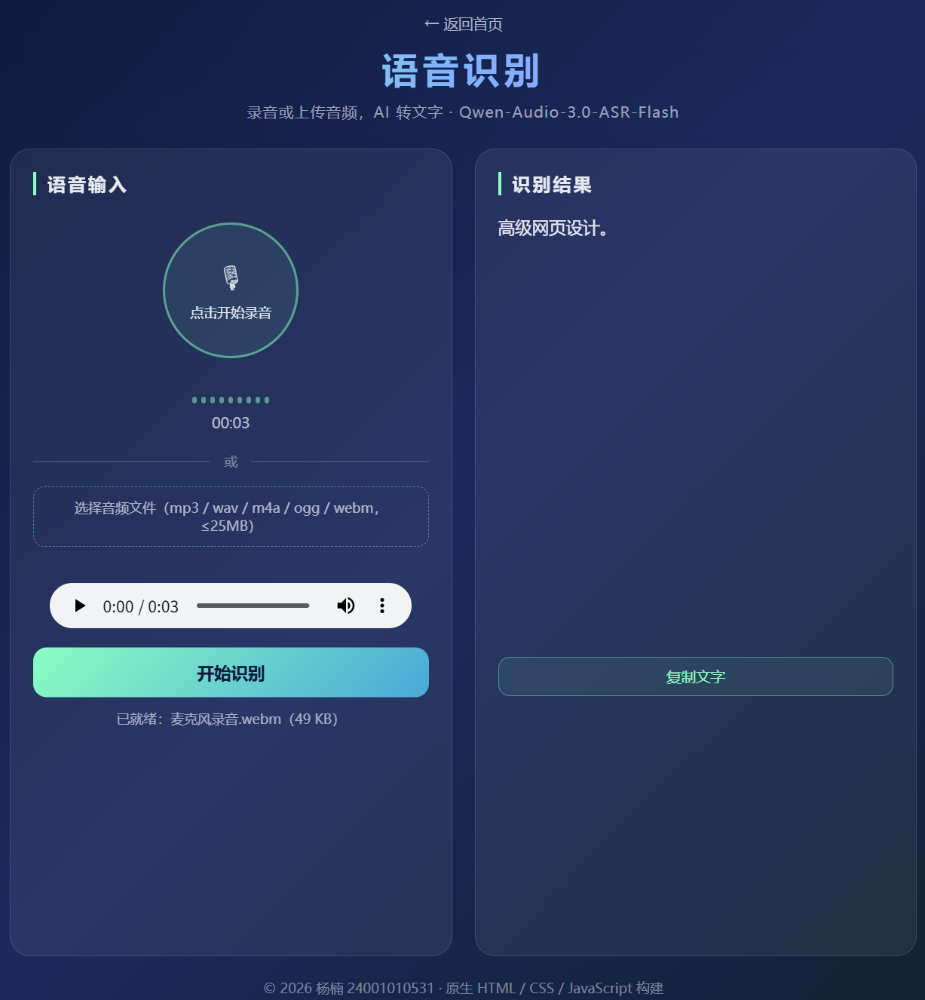

基于硅基流动平台搭建的 AI 在线客服，用户发起对话后即时返回智能回复。

基于硅基流动平台搭建的 AI 在线客服，用户发起对话后即时返回智能回复。

对话过程中切换到七牛平台继续保持上下文衔接，验证多平台模型无缝对接能力。

基于企业内部知识库的 RAG 检索增强问答，答案附带引用来源。

上传图片后由多模态大模型识别内容并返回结构化描述与分析。

实时语音输入转文字，支持中文普通话识别并输出带标点的准确转写结果。